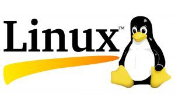
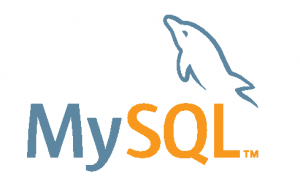

Penjelasan Mengenai Open Source

Open source merupakan sebuah lisensi pengembangan yang pengelolaannya tidak dikoordinasi oleh seorang individu semata atau sebuah lembaga pusat, melainkan dikoordinasi oleh para pengguna yang saling bekerja sama dalam penggunaan source code (kode sumber) yang tersedia bebas dan dapat diakses atau dimodifikasi oleh siapapun. Pada dasarnya, open source menerapkan pola pengembangan take and give.
Sementara itu, jika ada pembuat perangkat lunak (software) yang tidak mengizinkan dari kode programnya untuk diubah dan dimodifikasi, namun kode program dari perangkat lunak tersebut sebenarnya tersedia, maka bukanlah disebut sebagai sistem operasi open source. Yang perlu ditekankan di sini adalah, Sistem Operasi Open Source tidak selalu disediakan secara gratis, melainkan tetap ada biaya yang dikeluarkan untuk membeli program tersebut, Seperti halnya adalah RedHat Linux.
Tujuan Open Source yang sesungguhnya adalah menghilangkan ketergantungan terhadap Vendor, yang di mana dari pihak Vendor bisa saja bertindak secara seenaknya. Open Source juga meyediakan software yang mudah untuk dijangkau oleh masyarakat luas dan menghindari adanya pengambilan keuntungan besar-besaran/berlebihan dari Vendor.
Dan perlu untuk kita ketahui, Open Source di sini bersifat bebas maksudnya bukan berarti sebebas-bebasnya, melainkan bebas untuk digunakan, dikembangkan, disebarkan ulang dengan mempertanggungjawabkan secara bersama dan tidak untuk menghilangkan hak cipta pembuat.
Setiap orang dapat menggunakan sebuah program open source secara gratis, kemudian jika dirasa program tersebut ada yang kurang atau memerlukan fitur tambahan, pengguna tersebut dapat memodifikasinya dan ikut berkontribusi membuat program tersebut agar menjadi lebih baik. Kebebasan untuk berkarya sangat dijunjung tinggi oleh pola open source. Pengguna bebas berkarya tanpa adanya intervensi untuk mempelajari, mengubah, mengutak-atik, menambah bagian tertentu, memperbaiki, atau menyatakan bahwa sebuah source code memiliki sebuah kesalahan.
Selain itu, pengguna juga dapat kembali menyebar ulang program atau perangkat lunak open source tersebut untuk digunakan orang banyak. Walaupun terkesan setiap pengguna bebas melakukan modifikasi, namun tentunya harus diiringi dengan tanggung jawab penuh dan tidak asal-asalan dalam melakukan modifikasi.
Contoh Software Open Source
Setelah mengetahui tentang penjelasan mengenai apa itu open source, akan lebih lengkap rasanya bila kita mengetahui jenis-jenis software apa saja yang merupakan contoh software dengan lisensi open source ini. Nah, berikut ini adalah beberapa software yang memiliki lisensi open source yang bisa dikembangkan.
Linux
Contoh software yang pertama adalah linux. Kita semua pastinya sudah tahu bahwa linux ini merupakan sebuah software sistem operasi. Linux sendiri adalah software sistem operasi open source yang gratis untuk disebar luaskan di bawah lisensi GNU. Linux merupakan turunan dari unix dan dapat bekerja pada berbagai macam perangkat keras koputer mulai dari inter x86 sampai dengan RISC.
Linux saat ini, dapat digunakan untuk jaringan, pengembangan software, dan untuk pekerjaan sehari-hari. Kebebasan bagi programmer dan administrator jaringan dalam menggunakan linux, ialah kebebasan memperoleh kode sumber (source code) dan mengubahnya sesuai keinginan. Hal ini sendiri berimplikasi pada beberapa hal penting, yakni : keamanan dan dinamika. Karena sifatnya yang kompatible dengan UNIX maka linux bisa berinteraksi dengan sistem operasi lain seperti windows, Macintosh, netware dan lain sebagainya.
Mozilla FireFox
Bagi yang kesehariannya sudah tidak asing lagi dengan kegiatan berselancar di dunia maya, pastinya sudah tidak asing lagi dengan software yang satu ini. Mozzila Firefox merupakan sebuah aplikasi yang digunakan untuk web browsing atau mencari informasi melalui jaringan internet.
Mozilla Firefox sendiri merupakan perangkat lunak open-source yang paling banyak digunakan. Dikarenakan Mozilla sendiri termasuk sebuah browser web yang kecil, cepat, dan simpel. Mozilla juga mempunyai kelemahan yaitu akan crash jika membuka halaman Web yang sangat besar serta memiliki JavaScript, namun hal ini telah diperbaiki. Karena Mozilla bersifat open source maka kekurangan seperti diatas bisa diperbaiki dan dikembangkan.

Mysql
Contoh software open source yang berikutnya adalah mysql. MySQL adalah sebuah perangkat lunak system manajemen basis data SQL (DBMS) yang multithread, dan multi-user. MySQL adalah implementasi dari system manajemen basis data relasional (RDBMS). MySQL dibuah oleh TcX dan telah dipercaya mengelola system dengan 40 buah database berisi 10.000 tabel dan 500 di antaranya memiliki 7 juta baris.
Aplikasi MySql ini dapat berjalan disemua platform baik itu Linux maupun Windows, MySQL sendiri merupakan sebuah aplikasi yang dapat dipergunakan untuk membuat database yang bersifat terbuka atau open source. Yang merupakan program pengakses database yang bersifat networking sehingga bisa digunakan untuk aplikasi Multi User (Bisa digunakan oleh banyak Pengguna), MySQL merupakan aplikasi yang sangat populer di kalangan para pengembang bahasa pemrograman PHP dan banyak digunakan untuk situs web, aplikasi web dan layanan online lainnya.
Kelebihan Open Source
Software yang memiliki lisensi open source memiliki kelebihan dan juga kekurangan. Salah satu kelebihannya adalah kita sebagai pengguna bisa mengembangkan software yang kita gunakan tersebut agar lebih mudah untuk digunakan sesuai dengan keinginan kita sendiri dan tentunya juga untuk memperbaiki jika dirasa software tersebut memiliki kekurangan. Berikut ini adalah kelebihan yang dimiliki oleh software dengan lisensi open source.
Open source memungkinkan penggunanya untuk mempelajari kode sumber dari suatu perangkat lunak (memahaminya sedikit demi sedikit). Setelah pengguna bebas sebebas-bebasnya untuk melihat dan memahami kode sumbernya, pengguna juga dapat menganalisis apakah ada yang perlu diperbaiki / ditambahkan dari kode sumber tersebut, kemudian memodifikasinya (jika diperlukan) sehingga perangkat lunak tersebut menjadi lebih baik dari sebelumnya. Modifikasi juga bisa dimaksudkan agar muncul sebuah sistem baru yang sesuai dengan keinginan pengguna.
Dengan memakai perangkat lunak open source, pengguna tidak akan melanggar hukum karena memang perangkat tersebut tidak dikuasai oleh satu pihak tertentu secara komersil. Berbeda misalnya jika seorang pengguna menggunakan perangkat lunak bajakan yang sebetulnya tidak gratis, yang berarti melanggar hukum dan bisa terkena sanksi tertentu.
Karena semua pengguna bebas menggunakan dan memodifikasi perangkat lunak open source, maka tidak ada pengguna yang bisa membajaknya, karena toh perangkat lunak tersebut sudah dibagikan secara gratis, semua orang bisa mendapatkannya dengan mudah tanpa perlu membayar. Biasanya, pembajakan terjadi akibat harga perangkat lunak yang cukup mahal dan tidak semua orang bisa membelinya.
Kekurangan Open Source
Setelah mengetahui uraian mengenai kelebihan software yang memiliki lisensi open source di atas, bukan berarti bahwa lisensi open source tidak memiliki kekurangan. Berikut ini adalah beberapa kekurangan yang dimiliki oleh software dengan lisensi open source.
Tampilan pada perangkat lunak open source bisa jadi berbeda dengan perangkat lunak close source, sehingga pengguna harus mencoba memahaminya dengan cara otodidak atau membiasakan diri dengan tampilan tersebut. Misalkan begini, mungkin kita sudah terbiasa menggunakan sistem operasi Windows (sistem operasi close source) yang notabenya merupakan sistem operasi paling populer. Dan jika kita ingin menggunakan sistem operasi open source semisal Linux, tentu saja kita harus beradaptasi dengan tampilan serta menu navigasi pada sistem operasi Linux yang sedikit berbeda dengan Windows.
Setelah kita mengetahui pengertian, contoh dan juga kelebihan serta kekurangan dari software dengan lisensi open source, kali ini kita akan membahas juga mengenai software dengan lisensi close source. Dari namanya saja tentunya kita semua sudah tahu bahwa software dengan lisensi close source ini pastinya berbeda dengan open source. Jika pada open source kita bebas untuk mengembangkan software yang kita gunakan, hal itu akan berbeda halnya dengan close source ini.